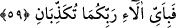
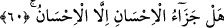
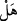

gümüştendir. Tarakları altındır. Buhurdanlıklarında ûd ağacı kokar, kokuları da
mikstir.”[179]
Yine sevgili Peygamberimiz (s.a.) şöyle buyurmuştur: “Şübhesiz cennetlik olan bir
kadının bacaklarının beyazlığı ve iliği yetmiş kat ipek örtüsü arkasından
gözükür.”[180] Allah; “sanki onlar yakut ve mercandırlar” buyurur. Yakut öyle bir
taştır ki, içinden bir ip geçirip sonra onu tertemiz silip durulatsan onu yakutun dışından
görürsün.
Amr b. Meymûn demiştir ki; cennet hûrîleri yetmiş kat cennet libâsı giydiği halde,
beyaz kristalin içindeki kırmızı şarap gözüktüğü gibi ilerden bacağının iliği gözükür.
59. Öyleyken Rabbinizin hangi nimetlerini yalanlayabilirsiniz?
Görme duyusuna ve faydalanmaya yönelik verilmiş bu nimetlerden hangisini
yalanlayabilirsiniz? Burada şu husûsa bir işâret vardır; bu irfan hûrîleri ve ihsân eseri
olan bu güzeller, inşirah ve bast tecellîlerinin yakutu ve celal ve kemal tecellîlerinin
mercanı olup kırmızı yakut gibi yanak letafetinde ve inci gibi beyaz mercan yaratılış
tazelik ve güzelliğindedir. Öyleyse, benzeyen veya benzetilen Rabbinizin nimetlerinden
hangisini yalanlayabilirsiniz?
60. İyiliğin karşılığı iyilikten başka bir şey midir?
“__WORD__” kelimesi dört mânâda kullanılır. a) “__WORD__” (kesinlik) anlamında (el-İnsan, 76/1)
âyetinde olduğu gibi. b) “Emir” mânâsında: “Artık (bunlardan) vaz geçtiniz değil
mi?” (el-Maide, 5/91) âyetindeki gibi, yâni vaz geçtiniz! demektir. c) İstifham (soru)
anlamında: “Siz de Rabbinizin size vaadettiğini gerçek buldunuz mu?” (el-A’raf,
5/44) âyetindeki soru gibi. d) Kesin inkârda kullanılan nefiy için olan “mâ” anlamında.
Bu âyet-i kerîmedeki gibi. Yâni “amelde iyiliğin mükâfâtı iyilikten başka bir şey
değildir” demektir.
Enes (r.a.)’dan rivâyet edildiğine göre, Sevgili Peygamberimiz (s.a.): “İyiliğin
karşılığı iyilikten başka bir şey midir?” âyetini okudular ve Rabbiniz ne buyurdu
bilir misiniz?” dediler. Ashâb (r.a.): “Allah ve Rasûlü daha iyi bilir” dediler. Allah
buyurur ki; mârifet ve tevhîdimle nimetlendirdiğim kimsenin mükâfâtı, rahmetimle
cennetime ve kudsî makamıma kabul etmemdir. Bu sebeple kula nisbetle ihsânın gayesi
Allah’ta fânî olmaktır. İhsan’ın Mevla’dan amacı kuluna hakkânî varlığı vermesidir.